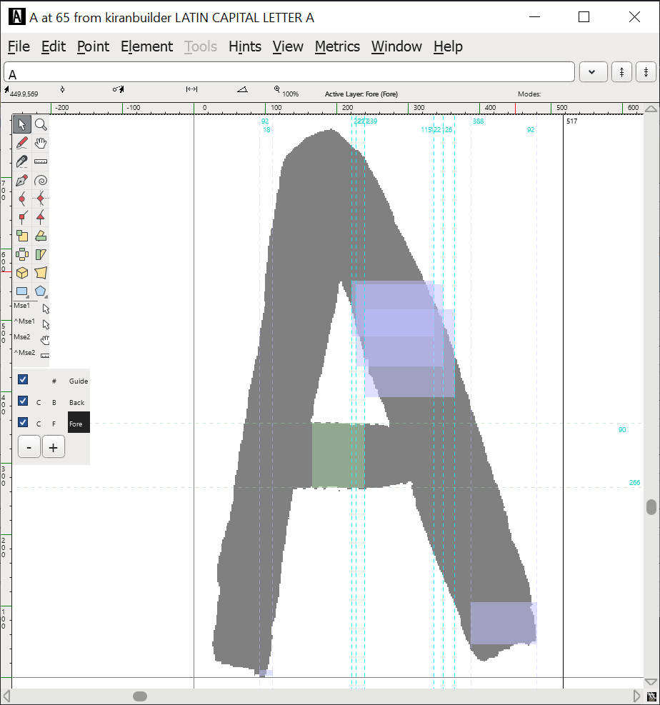
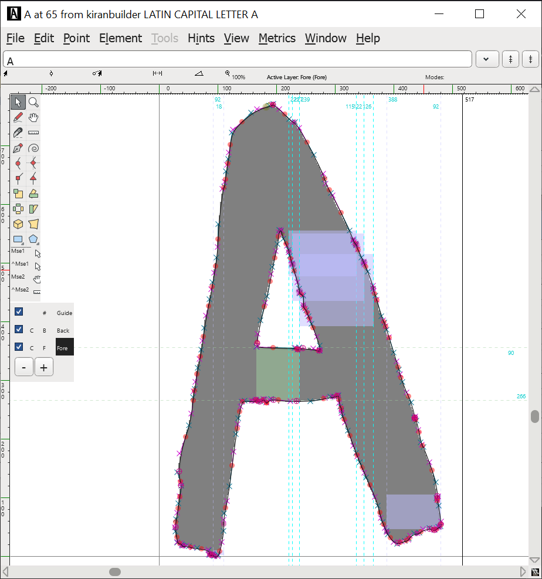

Font Workshop!
 by
alifeee
by
alifeee

- Why I like fonts
- Specifics about fonts
- Specifics about FontForge
Why I like fonts


They have feelings
A history of typefaces
A history of typefaces
A history of typefaces
A history of typefaces
A history of typefaces
How many fonts do you encounter in a day?
How about in a minute?
Why I like fonts
They are personal
This brings me joy
Fonts by Tom7

Fonts by CloFont

Why I like fonts
I can use them!
- Websites
- Documents
- Custom Font Defaults (Notepad, Browser)
- Printing & laser-cutting
- Digital greetings cards
Computers are still customisable!
How to design a font
It's easy to get lost in design
Font design can be a Trap, but I find it a rather pleasant one.
Practical definitions
- Characters & glyphs
- Splines, lines, & paths
- Points & the em-unit
http://designwithfontforge.com/
Design based definitions
- construction
- x- to cap-height proportion
- ascender height & descender depth
- width, width regularity, & variability
- weight & slant
- contrast & angle of contrast, weight distribution
- stems, joins, & bowls
- terminals, speed, & regularity
- flourish, serif, & decoration
https://fontforge.org/docs/tutorial.html
Practical guides for specific situations
- consistent stem widths, serifs, & heights
- making accented glyphs
- creating ligatures (fi, ll, etc.)
- metrics, spacing, & kerning
- generating a font
How to use FontForge
Context


FontForge Windows
- Overview ("Bitmap Window")
- Drawing ("Outline Window")
- Preview ("Metrics Window")
FontForge Windows: Bitmap
"The Overview"

FontForge Windows: Metrics
"The Preview"

spacing, kerning
FontForge Windows: Outline
"The Drawing"

baseline, cap height, x-height, ascender height, descender depth

How to make letter forms
- Digitally drawing them
- Modifying them
- Tracing them
Tracing
"rough and ready"



Let's make a font!
- Sketch some letter forms!
- Try starting with "o" and "n"!
- Draw some more letters, like "adhesion" or "videospan"!
- Digitize them!
- Do you want to digitally draw letters, or trace them?
- What sort of "vibe" might you be going for?
- Do you want to have upper- and lowercase letters? Numbers? Symbols? It's ok just to have a subset.